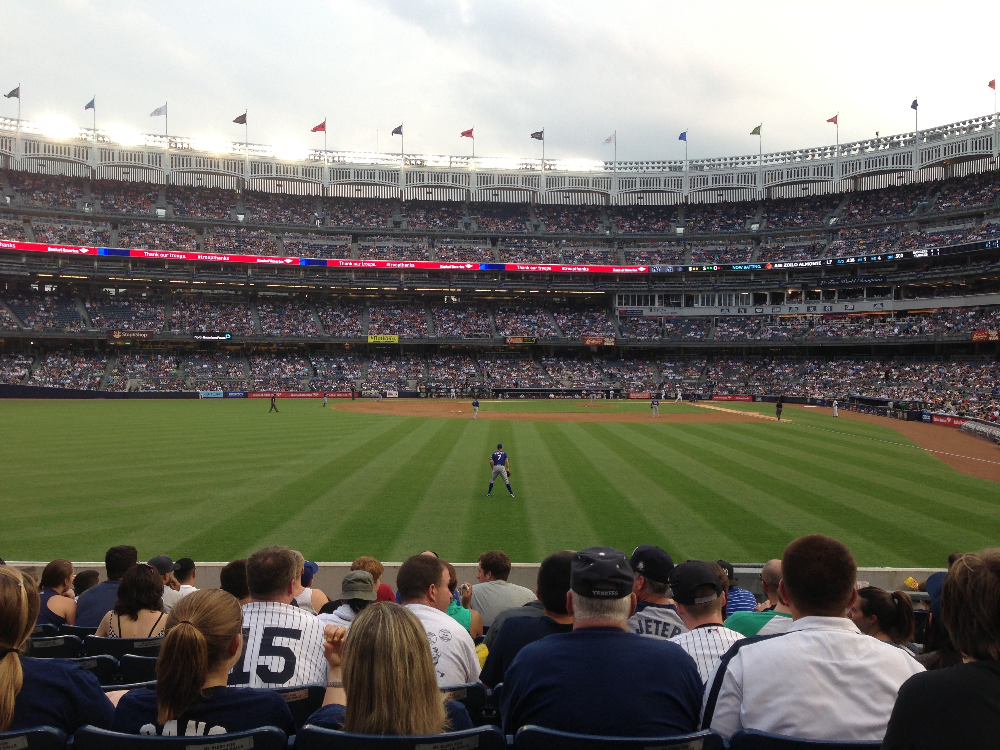

<!DOCTYPE html>
<html lang="en-US">

</html><!-- -->
<meta charset="utf-8">
<title>Projects</title>
<link rel="shortcut icon" type="image/x-icon" href="/Images/favicon.ico"> 
<link rel="Stylesheet" href="nav.css"
<link rel="Stylesheet" href="style.css"
<!-- IE6-8 support of HTML5 elements --> <!--[if lt IE 9]>
 <script src="//html5shim.googlecode.com/svn/trunk/html5.js"></script>
 <![endif]-->
 <style>
    body{
    Background:rgb(231, 197, 227);
     color:rgb(15, 105, 230)}
    </style>
    <nav id="nav">
        <ul id="navigation">
        <li><a href="index.html" class="First">Home</a></li>
         <li><a href="about.html">About</a></li>
        <li><a href="reflection.html">Reflection</a></li>
        <li><a href="project.html">Projects and experience &raquo;</a>
            <ul>
        <li><a href="#">Assignments</a></li>
        <li><a href="#">What I learned</a></li>
        <li><a href="#">Photos</a></li>
            </ul>
            </li>
              <li><a href="#"class=last>Contact</a></li>
            </ul>
        </nav>
<link rel="preconnect" href="https://fonts.gstatic.com"
<link href="https://fonts.googleapis.com/css2?family=Raleway:ital,wght@1,500&display=swap" rel="stylesheet">
<style>
    body{
    font-family: 'Raleway', sans-serif;
    }
    </style>
 <h1>Projects</h1>
</body>
<!DOCTYPE html>
<style>
* {
box-sizing: border-box;
}

/* Style the header */
.header {
grid-area: header;
background-color:rgb(231, 197, 227);
padding: 10px;
text-align: center;
color: rgb(15, 105, 230);
font-size: 35px;
}

/* The grid container */
.grid-container {
display: grid;
color: rgb(15, 105, 230);
grid-template-areas: 
'header header header header header header' 
'left left middle middle right right' 
'footer footer footer footer footer footer'; 
/* grid-column-gap: 12px; - if you want gap between the columns */
} 

.left,
.middle,
.right {
padding: 2px;
height: 800px; /* Should be removed. Only for demonstration */
width: 500px;
}

/* Style the left column */
.left {
grid-area: left;
color: rgb(15, 105, 230);
}

/* Style the middle column */
.middle {
grid-area: middle;
color:rgb(15, 105, 230);
font-size: 18px;
}

/* Style the right column */
.right {
grid-area: right;
color:rgb(15, 105, 230);
font-size: 18px;
}

/* Style the footer */
.footer {
grid-area: footer;
background-color:rgb(231, 197, 227);
color: black;
padding: 1px;
text-align: left;
font-size: 20px;
background-image:url(GreatWall.jpeg) ;
background-repeat: none;
}
</style>
</head>
<body>

<div class="grid-container">
<div class="header">
<h2>Projects and Experiences</h2>
</div>

<div class="left" style="background-color:rgb(231, 197, 227);">This really improved my IT skills and communication skills. It helped me understand people better and 
    made me more aware of the impact social media has. I consistently used adobe; I also did large amounts 
    of research on the homeless crisis in Missouri.<p>For a public speaking course, I had to write an essay and complete a presentation on pollution. I 
        displayed self-management by carrying my own workload on a project. My partner did the same. We 
        studied pollution in Columbia and researched pollution in other countries such as Russia and China. We 
        each did research and put our findings together to form a good essay. This project allowed me to rely on 
        others but also aided me in planning. It helped me understand key points instead of just including non-
        essential statements. </p> 
     </p> <p> </p></div>
<div class="middle" style="background-color:rgb(231, 197, 227);">
    <h3>Other Experiences</h3>
<p> I would research and look at the focus of the project from a different perspective. I showed emotional 
    intelligence during my BA 2500 project. The focus was to aid the poor through editing a local homeless 
    shelters website and running their social media accounts. The purpose was to make people aware of 
    the clothing and food drives that were occurring. They were too busy and could not run it. I updated 
    everything and got the shelter more attraction.</p>
    <p></p>
</div>  
<div class="right" style="background-color:rgb(231, 197, 227);"<p></p>
<p>In school learning competencies I developed were leadership, emotional intelligence, and self-
    management. I displayed leadership by completing the most difficult parts of a BA 3500 group 
    essay. I also planned all the meetings and spoke the most in meetings while developing the 
    essay. Finally, I submitted all final reports to the teaching assistant. The paper was on housing in 
    the Columbia area. I learned planning and managing time is essential to success and 
    understanding the client can gain a large amount of information which can lead in helping them. </p> 

</div>

<div class="footer"> 
<p>Danny Waldron</p>
Email:DRWGBG@umsystem.edu
<p></p>
Number:1-888-888-8888
 <p>Copyright 2022</p>
</div>
</div>

</body>
</html>

</body>
</html>
    
        
</body>
</html>